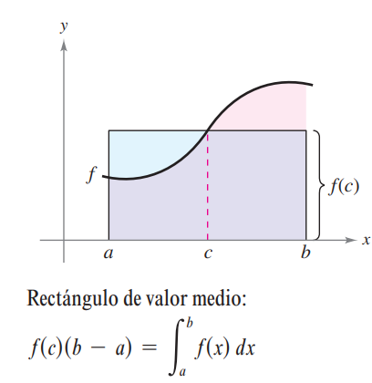

Teoremas fundamentales del cáluculo
Teorema fundamental del cálculo
Si una función \(f\) es continua en un intervalo cerrado \([a,b]\) y \(F\) es la antiderivada de \(f\) en el intervalo \([a,b]\), entonces
\[\int_{a}^{b} f(x) dx = F(b) - F(a).\]
Ejemplo
Calculemos la integral definida de la función \(f(x) = x^2\) en el intervalo \([0,1]\). \[\int_{0}^{1} x^2 dx = \frac{x^3}{3} \Big|_{0}^{1} = \frac{1}{3},\]
¿esta afirmación la podemos usar para cálcular el area bajo la curva de una función positiva?
Ejercicios
Calcular las integrales si es posible de las siguientes funciones en los intervalos dados:
- \(\int_{0}^{1} x^3 dx\)
- \(\int_{1}^{4} 3\sqrt{x} dx\)
- \(\int_{0}^{1} \frac{1}{x} dx\)
- \(\int_{0.1}^{1} \frac{1}{x} dx\)
- \(\int_{1}^{2} (x^2-3) dx\)
- \(\int_{0}^{2} |2y-1| dy\)
Teorema del valor medio para integrales
Si \(f\) es continua en \([a,b]\), entonces existe un punto \(c\in[a,b]\) tal que
\[\int_a^b f(x)dx=f(c)(b-a),\]

¿Cómo podemos argumentar que existe un punto \(c\) que cumple con la igualdad?
Podemos construir la siguiente función:
\[F(x)=\int_a^x f(t)dt\]
¿Qué propiedades tiene esta función?
\(F\) es continua en \([a,b]\)
¿Cuál es teorema de valor medio para funciones continuas?
¿Cómo podemos aplicar el teorema de valor medio para funciones continuas a \(F\)?
Ejercicio
¿Es posible encuentre un valor \(c\) que cumple el teorema del valor medio para la función \(f(x)=x^2\) en el intervalo \([1,3]\)?
Solución:
Si, porque la función \(f\) satisface las hipótesis del teorema del valor medio para integrales.
Para encontrarlo debemos encontrar la integral
\[\int_1^3 x^2 dx=\frac{x^3}{3}\Big|_1^3=\frac{3^3}{3}-\frac{1}{3}\] luego necesitamos encontrar un \(c\) tal que \[\frac{3^3}{3}-\frac{1}{3}=f(c)(3-1),\] \[\frac{26}{3}=2c^2,\] \[c=\pm\sqrt{\frac{13}{3}}\approx\pm 2.081.\]
Definición el valor medio de una función en un intervalo
Si \(f\) es integrable en \([a,b]\), el valor medio de \(f\) en \([a,b]\) es \[\frac{1}{b-a}\int_a^b f(x)dx.\]
Ejemplos
Determinar el valor medio de \(f(x)=3x^2-2x\) en el intervalo \([1,4]\).
Solución:
El valor medio de una función \(f(x)\) en el intervalo \([a,b]\) se define como: \[\frac{1}{b-a}\int_a^b f(x)dx=\frac{1}{4-1}\int_1^4(3x^2-2x)dx=16.\]
Ejercicio
A diferentes alturas en la atmósfera de la tierra el sonido viaja a diferentes velocidades. La siguiente tabla muestra la velocidad del sonido en función de la altura.
\[\begin{array}{|c|c|c|c|c|c|c|c|c|c|c|c|} \hline \text { Altura (km) } & 0 -11.5 & 11.5 - 22 & 22-32 & 32-50 & 50-80 \\ \hline \text { Velocidad (m/s) } &-4x+341 &295 & \frac{3}{4}x+278.5 &\frac{3}{2}x+254.5&-\frac{3}{2}x+404 \\ \hline \end{array}\]
Tomado de Larson and Edwards (2011)
- Construya una función que represente la velocidad en función de la altura. Grafique la función.
- ¿Cuál es la velocidad del sonido a \([0,80]\) de altura?